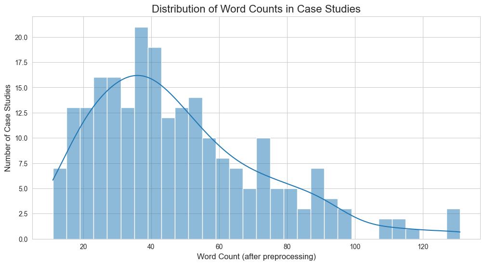
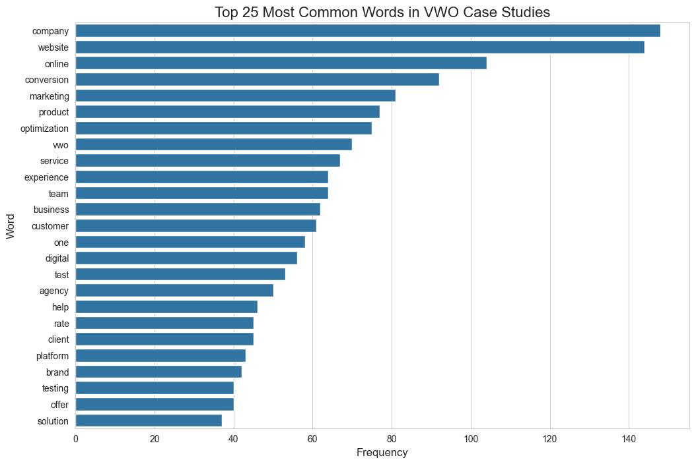
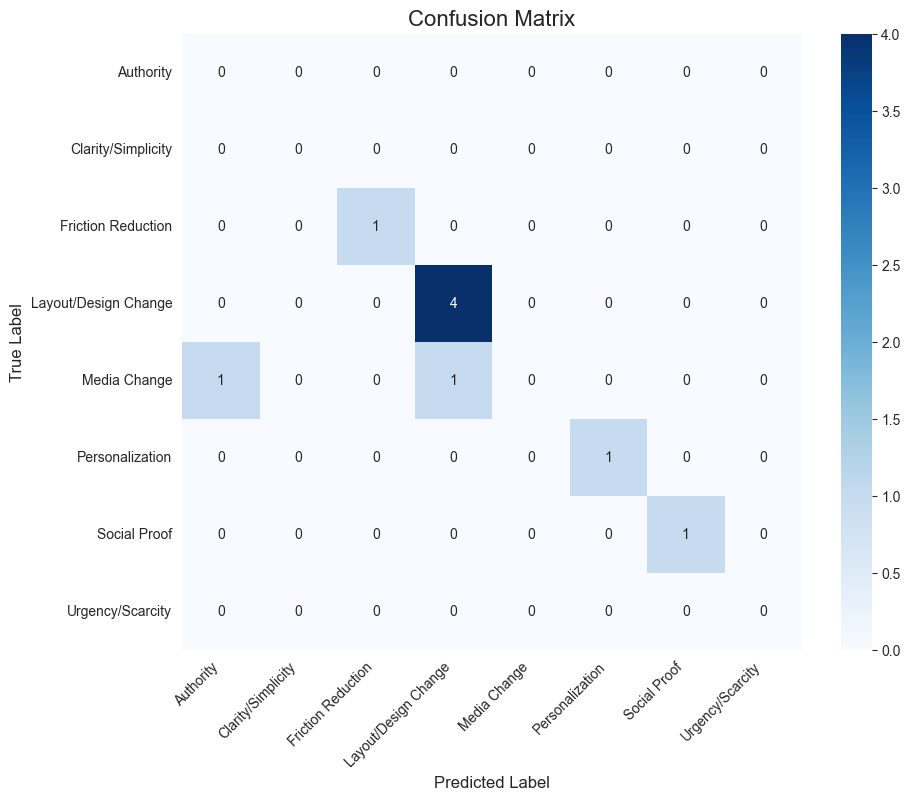

Introduction: The Problem of the Black Box
In the field of Human-Computer Interaction (HCI), it is well-established that user engagement is not merely a function of usability, but instead from a complex interplay of design, context, and user psychology. A/B testing is the primary tool used by industry to navigate this complexity, allowing practitioners to empirically test how minor changes to a user interface can influence user behaviour.
However, the insights from these tests are often siloed and anecdotal. While a company might know that changing a button's text from "Sign Up" to "Get Started" increased conversions, the underlying psychological principle driving that change is often not systematically analysed. This project aims to addresses this "black box" problem. The central research question is: Can we use Natural Language Processing (NLP) to analyse the text of A/B test case studies and automatically classify them according to established behavioral science principles?
The goal is to move beyond simple outcomes (e.g., a 20% uplift) and create a system that can identify the persuasive strategies at play, such as the use of Social Proof, Urgency, or Clarity. This project aims to develop a proof of concept for such a system, demonstrating a methodology for applying a behavioral science framework to real world, unstructured marketing text.
My Process: Finding Quality in a Sea of Data
To answer my research question, I followed a step-by-step process, beginning with data collection and ending with the creation of a predictive model. However, an important part of this project was adapting my plan when I discovered that the initial data quality wasn't good enough for the task.
Stage 1: Collecting the Raw Data
First, I needed to gather a corpus to analyse. I built a custom Python scraper to automatically gather over 200 A/B test case studies from the website vwo.com. I discovered that the website loaded its content dynamically, so my scraper was designed to interact with the site's hidden API. This allowed me to efficiently collect the summary text for every case study.
Stage 2: Discovering the Data Quality Problem
With my initial dataset of 232 articles, I began the analysis. However, after manually reading some samples of the articles, I identified a critical problem: most of the texts were vague summaries. They would state a successful outcome (e.g., "we increased sales by 20%") but leave out the crucial details of what was actually tested. This meant that over 60% of my data was unusable for my original goal of classifying the specific psychological techniques used.
Stage 3: A Pivot to a "Gold Standard" Corpus
This discovery prompted a change in strategy. Instead of working with a large, low-quality dataset, I decided to create a smaller, high-quality one. This pivot was inspired by my previous research experience, where isolating specific design elements in a controlled way proved more insightful.
To do this, I built a ‘feasibility scorer’. A script that read all 232 articles and gave each one a ‘detail score’ based on how many keywords related to specific test details (like variation, control, headline, button) it contained. This allowed me to rank every article from most to least promising. I then took the top 50 highest-scoring articles and re-scraped their full text to create my final 50-item "gold standard" corpus. While this dataset is smaller, it is far more relevant and suitable for a detailed pilot study.
Stage 4: Teaching the Machine
With my higher quality corpus ready, I manually labeled each of the 50 articles according to a schema of eight behavioral principles (see LABELLING_GUIDE.md). This labeled data became the ‘answer key’ for training my machine learning model.
To teach the computer, I first had to convert the text into a numerical format it could understand. I used a standard technique called TF-IDF, which measures how important a word is to a document. Finally, I trained a Linear Support Vector Classifier. This is a powerful and reliable algorithm for text classification on 80% of my data. The remaining 20% was held back to test how well the model had learned.
The Application: The Behavioural Design Explorer
I built a simple web application that demonstrates the model's capabilities. The Behavioural Design Explorer is a tool where a user can paste in a piece of text describing an A/B test, and the application will use the trained model to predict which behavioral principle it represents.
This application serves two key purposes:
- It provides a live, interactive demonstration of the project's outcome, making the results accessible to anyone, regardless of their technical background.
- It acts as a prototype for a real-world tool that could eventually help marketing teams or designers think more critically about the persuasive strategies they use in their work.
Findings & What They Mean
While the model achieved a promising headline accuracy of 78%, this single metric can be misleading, especially with an imbalanced dataset. A deeper analysis of the model's performance reveals a more nuanced story.
The detailed classification report shows that the model's strength lies in identifying the most common category, Layout/Design Change. For this class, it achieved a high precision of 0.80 (meaning when it predicted this label, it was correct 80% of the time) and a perfect recall of 1.00 (meaning it successfully found all true instances of this label in the test set).
However, the report also highlights the central challenge of this pilot study: data sparsity. For rare categories with only one or two examples in the test set, such as Media Change, the model failed to make any correct predictions, resulting in a precision and recall of 0.00. This is not a failure of the algorithm itself, but rather a direct consequence of the limited training data for these specific classes. The perfect scores for categories like Friction Reduction are encouraging, but must be interpreted with caution as they are based on only a single test instance.
The confusion matrix visualizes this behavior clearly. The model's primary error was misclassifying one true Media Change case as a Layout/Design Change, likely because the text contained overlapping keywords related to visual elements. Ultimately, the most important finding is not a single accuracy score, but the successful validation of the overall methodology. The analysis proves that the model can effectively learn the patterns of well-represented classes and clearly identifies which specific categories require more data to improve performance.
Distribution of Word Counts
Top 25 Most Common Words
Model Performance: Confusion Matrix
Critical Reflection & Next Steps
This project was a powerful lesson in the realities of NLP and data science. The initial plan to use a large dataset was held up by a real world data quality issue. The necessary pivot to a smaller, more curated corpus was a crucial decision that ultimately made the project more rigorous and insightful. It highlights a fundamental truth: the most advanced model cannot make up for poor quality data.
The main limitation of this study is, by design, the small size of the final dataset. The model should be seen as a successful proof of concept, not a production ready tool.
The clear path for future work is to apply the methodology developed here at a larger scale. This would involve using the feasibility scorer to find hundreds of high-quality case studies from multiple websites/ forums and then a larger labeling effort. This would provide enough data to train a more robust and accurate model, moving this project from a successful pilot study to a tool with real world diagnostic power.